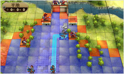
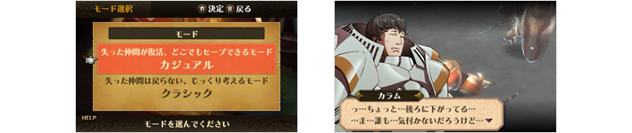
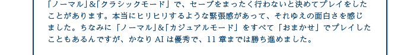
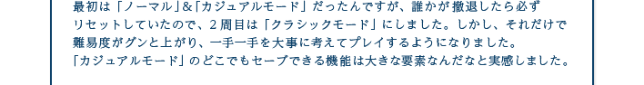
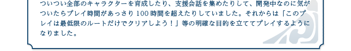

『ファイアーエムブレム 覚醒』では、これまでのシリーズ同様、敵軍ユニットの攻撃が当たる範囲を確認しつつ、自軍ユニットそれぞれの布陣や行動を戦略的に考える楽しさを存分に味わうことができます。
「ファイアーエムブレム」シリーズといえば、自軍の仲間がバトルに負けると、二度と復活してくれないというシビアなシステムが有名です。できるだけ全員が生き残れるようにゲームを進めたくて、リセットボタンを何度も押してやり直したり、途中であきらめてしまった経験がある読者のみなさんも多いはずです。
本作には、前作『ファイアーエムブレム 新・紋章の謎 〜光と影の英雄〜』から採用された「カジュアルモード」が搭載されています。「カジュアルモード」でゲームを開始すれば、仲間が戦闘不能状態になっても撤退扱いとなり、次のマップでは復活します。一方で、従来どおり仲間が戻らない「クラシックモード」もあるので、好きなほうを選ぶことができます。

さらに、ゲームの難易度も「ノーマル」「ハード」「ルナティック」の3段階から選べます。「ファイアーエムブレム」シリーズが初めてであれば、「ノーマル」＆「カジュアルモード」ならサクサク進めるのでおすすめです。
筆者は過去作をひととおりプレイしたことがあるのですが、腕試しにチャレンジした「ルナティック」では、最初のマップから仲間がどんどん倒れていってしまい、心が折れそうなくらい難しく感じました。「カジュアルモード」でもアッサリ全滅するので、何度もリセットをくり返して、クリアーには1時間ほどかかってしまいました。それだけ初心者から超上級者まで幅広く、長く遊べるはずです。
筆者は過去作をひととおりプレイしたことがあるのですが、腕試しにチャレンジした「ルナティック」では、最初のマップから仲間がどんどん倒れていってしまい、心が折れそうなくらい難しく感じました。「カジュアルモード」でもアッサリ全滅するので、何度もリセットをくり返して、クリアーには1時間ほどかかってしまいました。それだけ初心者から超上級者まで幅広く、長く遊べるはずです。

ちなみに、あくまで「クラシックモード」でプレイしたいというファンの方は、「Lボタン＋Rボタン＋スタートボタン」の同時押しでリセットが可能です。ロードは速く、リセットからそれほど待たずにセーブ地点に戻れるようになっているのは、ファンにとってうれしいところです。





